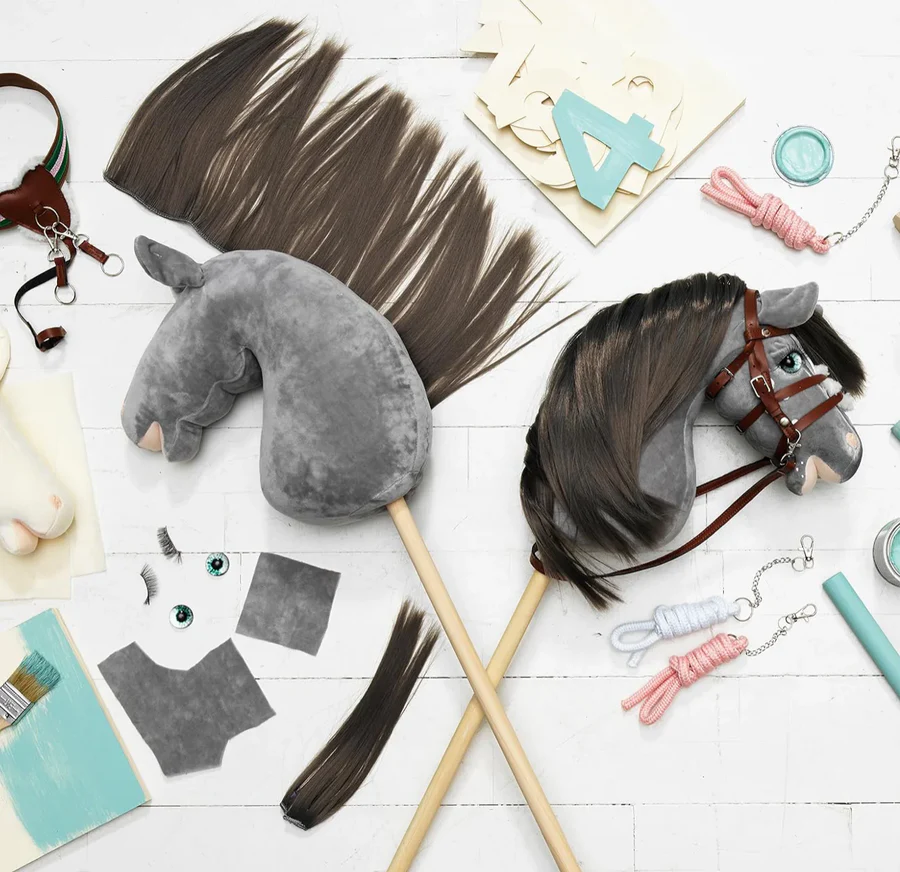

Die Pferde im Hobbyhorsing
Jedes Steckenpferd wird als kreatives Kunstwerk angesehen. Die Reiterinnen und Reiter personalisieren ihre Pferde, geben ihnen Namen und gestalten sie oft nach dem Vorbild echter Pferderassen. Es gibt zwei Haupttypen: Springpferde (leichter und robuster gebaut) und Dressurpferde (elegant und kunstvoll im Design).
Springpferde (Show Jumping Horses)
Diese Pferde sind besonders robust und leicht gebaut. Sie eignen sich ideal für Sprungdisziplinen und schnelle Bewegungsabläufe.
Dressurpferde (Dressage Horses)
Eleganz und Ausdruck stehen bei diesen Pferden im Vordergrund. Sie werden häufig bei Choreografien und Dressur-Vorführungen eingesetzt.

Zusätzlcihe Infos (English)
- Gestaltung: Reiter geben ihren Steckenpferden Namen, Persönlichkeiten und sogar Hintergrundgeschichten.
- Materialien: Die meisten Köpfe bestehen aus Filz oder Vlies und sind mit Füllmaterial gefüllt; die Stäbe sind typischerweise Holzdübel.
- Größe: Horse heads measure around 25–30 cm long; stick length is adjusted to rider height (usually 50–80 cm).
- Lagerung: Pferdeköpfe sind etwa 25–30 cm lang; die Stocklänge wird der Körpergröße des Reiters angepasst (meist 50–80 cm).
- Beliebtheit: Manche Reiter sammeln Steckenpferde und präsentieren sie bei Wettbewerben oder online.